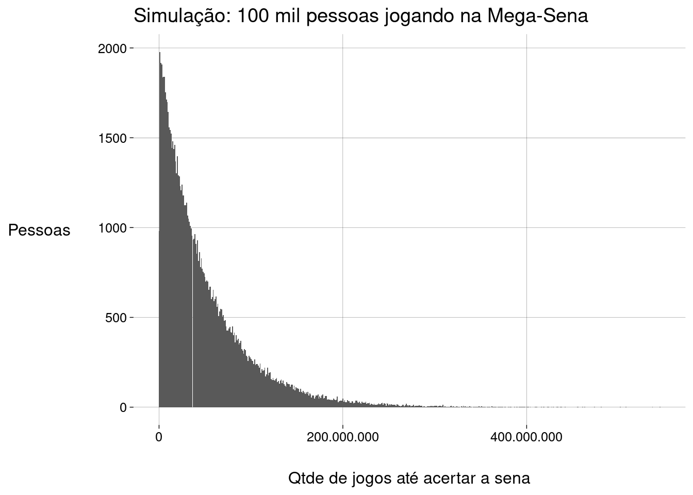
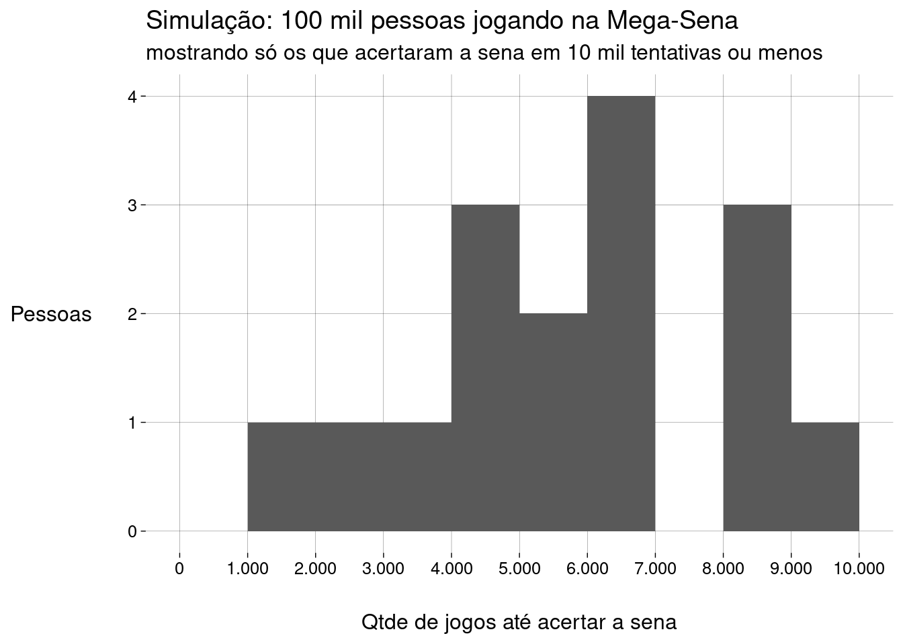
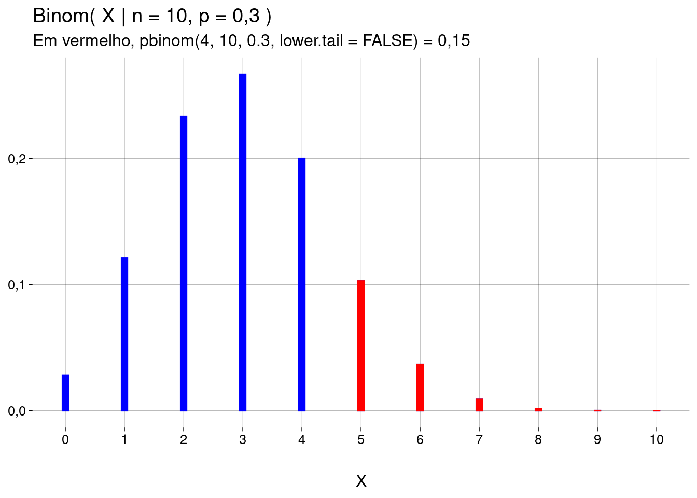
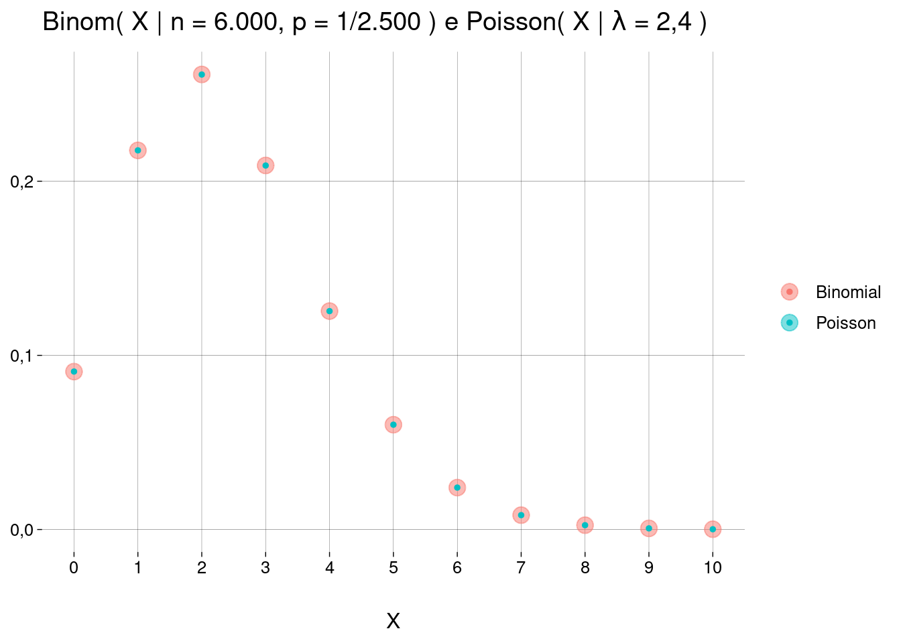

Capítulo 9 Distribuições discretas
9.2 Distribuição uniforme discreta
9.2.1 Exemplo: um dado
Cada resultado de \(1\) a \(6\) tem a mesma probabilidade de ocorrer.
A variável aleatória \(X\) representa o número que resulta de um lançamento.
O suporte (conjunto de valores possíveis) de \(X\) é o conjunto \(\{ 1, 2, 3, 4, 5, 6 \}\).
-
A distribuição de probabilidade de \(X\) é uniforme discreta com \(6\) valores, escrita como \(\text{UnifDiscr}(X \mid n=6)\):
\[ P(X = x) = \begin{cases} 1/6 &\text{se } x \in \{1, 2, 3, 4, 5, 6\} \\ 0 &\text{senão} \end{cases} \]
9.2.2 No geral
Com \(n\) valores possíveis, a distribuição é \(\text{UnifDiscr}(X = x \mid n)\).
\(n \in \mathbb{N}^+\).
-
Probabilidades:
\[ P(X = x) = \begin{cases} 1/n &\text{se } x \in \{1, \ldots, n\} \\ 0 &\text{senão} \end{cases} \]
-
Valor esperado:
\[ \begin{aligned} E(X) &= \frac{1}{n} \cdot (1 + \cdots + n)\\ &= \frac{1}{n} \cdot \frac{n(n+1)}{2}\\ &= \frac{n+1}{2} \end{aligned} \]
-
Variância:
\[ \begin{aligned} \sigma^2(X) &= \sum \left[(x_i - \mu)^2 \cdot \frac1n \right] & \text{(definição de variância)}\\ &= \frac1n \sum (x_i - \mu)^2 \\ &= \frac1n \left[ \sum (x_i^2 -2\mu x_i + \mu^2) \right] \\ &= \frac1n \left[ \sum x_i^2 - 2\mu \sum x_i + n\mu^2 \right] \\ &= \frac1n \sum x_i^2 - 2\mu \frac{\sum x_i}{n} + \frac{n\mu^2}{n} & \left(\text{mas}\quad \frac{\sum x_i}{n} = \mu\right)\\ &= \frac1n \sum x_i^2 - 2\mu^2 + \mu^2\\ &= \frac1n \sum x_i^2 - \mu^2 & \left(\text{vamos usar a fórmula para } \sum x_i^2 \right)\\ &= \frac1n \cdot \frac{n(n+1)(2n+1))}{6} - \mu^2 & \text{(vamos substituir } \mu \text{ pela fórmula)}\\ &= \frac1n \cdot \frac{n(n+1)(2n+1))}{6} - \left(\frac{n+1}{2}\right)^2 & \text{(o resto é contarada)}\\ &= (n+1) \left( \frac{2n+1}{6} - \frac{n+1}{4}\right) \\ &= (n+1) \left( \frac{4n + 2 -3n - 3}{12}\right) \\ &= \frac{(n+1)(n-1)}{12} \\ &= \frac{n^2 - 1}{12} \end{aligned} \]
9.2.3 Em R
As funções dunif, punif, qunif e runif trabalham com a distribuição uniforme contínua. Não servem para a distribuição uniforme discreta.
-
Para definir os valores possíveis da variável aleatória \(X\), use um vetor.
x <- 1:6 -
Todas as probabilidades são iguais a \(\frac1n\):
probs <- 1 / length(x) -
Distribuição:
X p 1 0,1666667 2 0,1666667 3 0,1666667 4 0,1666667 5 0,1666667 6 0,1666667 -
Exemplo: \(P(X \leq 2)\):
## [1] 0,3333333 -
Gráfico:
Para gerar amostras, use
sample, que, por default, trabalha com a distribuição uniforme discreta.-
Simulando dez lançamentos de um dado:
sample(1:6, size = 10, replace = TRUE)## [1] 1 4 2 1 2 3 1 5 2 1
9.3 Distribuição de Bernoulli
9.3.1 Exemplo: uma moeda
O experimento tem exatamente dois resultados possíveis: coroa ou cara.
-
A variável aleatória \(X\) representa numericamente os dois resultados possíveis. É comum usar \(0\) para um resultado, \(1\) para o o outro.
\[ X = \begin{cases} 0 &\text{se coroa} \\ 1 &\text{se cara} \end{cases} \]
O suporte é o conjunto \(\{0, 1\}\).
Vamos chamar de \(p\) a probabilidade de cara (o caso \(X = 1\), comumente chamado de sucesso)9.
-
Para uma moeda justa, a distribuição de \(X\) é a distribuição de Bernoulli com \(p=0{,}5\), escrita como \(\text{Bernoulli}(X \mid p = 0{,}5)\):
\[ \begin{aligned} P(X = 0) &= 1 - 0{,}5 \\ P(X = 1) &= 0{,}5 \end{aligned} \]
-
Podemos escrever \(P(X=x)\) de forma mais compacta:
\[ P(X = x) = 0{,}5^x \cdot (1 - 0{,}5)^{1 - x} \]
Cada valor do parâmetro \(p\) dá uma distribuição de Bernoulli diferente.
-
Gráfico com \(p = 0{,}8\) (uma moeda muito viciada, para a qual a probabilidade de cara é de \(80\%\)):
9.3.2 No geral
Para probabilidade de sucesso \(p\), a distribuição é escrita como \(\text{Bernoulli}(X = x \mid p)\).
\(x \in \{0, 1\}\).
\(p \in [0, 1]\).
-
Probabilidades:
\[ P(X = x) = p^x \cdot (1 - p)^{1 - x} \]
-
É comum chamar de \(q\) a probabilidade de fracasso. Ou seja,
\[ q = 1 - p \]
-
As probabilidades ficam
\[ P(X = x) = p^x \cdot q^{1 - x} \]
-
Valor esperado:
\[ \begin{aligned} E(X) &= 0 \cdot (1 - p) \;+\: 1 \cdot p \\ &= p \end{aligned} \]
-
Variância:
\[ \begin{aligned} \sigma^2(X) &= (0 - p)^2 \cdot (1 - p) \;+\: (1 - p)^2 \cdot p \\ &= p^2 - p^3 + p - 2p^2 + p^3 \\ &= -p^2 + p \\ &= p(1 - p) \\ &= pq \end{aligned} \]
9.3.3 Em R
Em R, a distribuição de Bernoulli é um caso especial (\(n = 1\)) da distribuição binomial, que nós vamos ver mais adiante neste capítulo.
Se você não quiser usar as funções da distribuição binomial, pode definir um vetor com os dois valores possíveis e um vetor com as duas probabilidades, e então usar
samplecom o argumentoprob.-
Por exemplo, para simular \(10\) lançamentos de uma moeda viciada, onde \(p = 0{,}8\):
## [1] 1 1 1 1 0 0 1 0 1 1
9.4 Distribuição geométrica
9.4.1 Exemplo: spam
Cada e-mail tem probabilidade \(0{,}1\) de não ser spam, e \(0{,}9\) de ser spam.
Considere que cada e-mail é independente de cada outro.
Você abre sua inbox (sem filtro antispam) e começa a ler as mensagens sequencialmente.
A variável aleatória \(X\) representa o número de mensagens spam que você precisa abrir até chegar à primeira mensagem que não é spam.
O suporte é \(\{0, 1, 2, 3, \ldots \}\) (nossa primeira distribuição com suporte infinito!).10
Vamos chamar de \(p\) a probabilidade de sucesso (a mensagem não ser spam).
A distribuição de \(X\) é a distribuição geométrica com \(p = 0{,}1\), escrita como \(\text{Geom}(X \mid p = 0{,}1)\).
-
Qual a probabilidade de que a primeira mensagem não-spam seja a décima, por exemplo?
\[ \begin{aligned} \text{Geom}(X = 9 \mid p = 0{,}1) &= 0{,}9^9 \cdot 0{,}1 \\ &\approx 0{,}039 \end{aligned} \]
-
Gráfico:
Cada barra corresponde à probabilidade de que seja necessário abrir exatamente \(x\) mensagens spam antes de chegar à primeira mensagem não-spam.
Mais adiante, vamos ver como calcular a probabilidade de que seja necessário abrir no mínimo (ou no máximo) \(x\) mensagens spam antes de chegar à primeira mensagem não-spam.
Cada valor de \(p\) dá uma distribuição geométrica diferente.
9.4.2 No geral
Para probabilidade de sucesso \(p\), a distribuição é escrita como \(\text{Geom}(X=x \mid p)\).
\(x \in \{0, 1, 2, 3, \ldots \}\).
\(p \in [0, 1]\).
\(X\) conta a quantidade de provas de Bernoulli que têm resultado fracasso antes do primeiro sucesso.
As provas de Bernoulli são independentes e têm probabilidade fixa de sucesso \(p\).
-
Probabilidades:
\[ \text{Geom}(X = x \mid p) = (1-p)^x \cdot p \]
-
Valor esperado:
Vamos chamar \(1 - p\) de \(q\).
Então, \(P(X = x) = q^x \cdot p\).
Daí,
\[ \begin{aligned} E(X) &= 0p + 1qp + 2q^2p + 3q^3p + \cdots \\ &= 0(1-q) + 1q(1-q) + 2q^2(1-q) + 3q^3(1-q) + \cdots \\ &= q - q^2 + 2q^2 - 2q^3 + 3q^3 - 3q^4 + \cdots \\ &= q + q^2 + q^3 + \cdots \\ &= \frac{q}{1-q} \\ &= \frac{1-p}{p} \\ &= \frac qp \end{aligned} \]
No exemplo dos e-mails,
\[ E(X) = \frac{q}{p} = \frac{0{,}9}{0{,}1} = 9 \]
-
Variância:
\[ \sigma^2(X) = \frac{1-p}{p^2} = \frac q{p^2} \]
Exercício: derive esta fórmula da variância.
9.4.3 Em R
Função de distribuição de probabilidade: \(\text{Geom}(X = x \mid p)\)
Para calcular \(\text{Geom}(X=x \mid p)\), use
dgeom(x, prob=p).Tanto
xquantoprobpodem ser vetores.-
No exemplo do spam, vamos computar as probabilidades de \(X\) ser \(0, 1, 2, \ldots, 10\):
dgeom(x = 0:10, prob = .1)## [1] 0,10000000 0,09000000 0,08100000 0,07290000 0,06561000 0,05904900 0,05314410 ## [8] 0,04782969 0,04304672 0,03874205 0,03486784 -
Vamos computar \(\text{Geom}(X=10 \mid p)\) para vários valores de \(p\):
## [1] 0,03486784401 0,02147483648 0,00847425747 0,00241864704 0,00048828125 ## [6] 0,00006291456 0,00000413343 0,00000008192 0,00000000009 0,00000000000 -
Mas cuidado: se os dois argumentos forem vetores, o resultado é um vetor com o comprimento do maior argumento, com os valores de
xpareados um a um com os valores deprob(lembrando que R recicla o vetor mais curto):## [1] 0,03486784 0,01717987 0,02824295Os valores acima são, respectivamente, \(P(X = 10 \mid p = 0{,}1)\), \(P(X = 11 \mid p = 0{,}2)\) e \(P(X = 12 \mid p = 0{,}1)\).
Função de distribuição acumulada: \(\text{Geom}(X \leq q \mid p)\)
Para calcular \(\text{Geom}(X \leq q \mid p)\), use
pgeom(q, prob=p).-
Se você passar, como argumento,
lower.tail = FALSE, a probabilidade calculada é \(P(X > q \mid p)\) (a probabilidade acumulada à direita do valor \(q\)). Tanto
qquantoprobpodem ser vetores.-
No exemplo do spam, vamos computar a probabilidade de precisar abrir no máximo \(10\) mensagens spam para então abrir a primeira mensagem não-spam:
pgeom(q = 10, prob = .1)## [1] 0,6861894Na verdade, isto é o mesmo que somar as probabilidades de \(X = 0\), \(X = 1\), etc., até \(X = 10\):
## [1] 0,6861894 Um exemplo mais realista: cada vez que você joga \(6\) números na Mega-Sena, a probabilidade de você acertar a sena é de \(1\) em \(50.063.860\), segundo http://loterias.caixa.gov.br/wps/portal/loterias/landing/megasena.11
-
Qual a probabilidade de você acertar a sena em alguma das primeiras \(1.000\) vezes que você jogar? \(10.000\) vezes? \(100.000\) vezes (o que equivale a cerca de \(962\) anos, jogando \(2\) vezes por semana)?
## [1] 0,00001999426 0,00019974491 0,00199547524 -
Qual a probabilidade de você jogar duas vezes por semana, durante \(100\) anos, sem acertar a sena? Considerando \(52\) semanas por ano:
vezes <- 2 * 52 * 100 vezes## [1] 10400pgeom(vezes, p, lower.tail = FALSE)## [1] 0,9997923 O problema é que, com uma probabilidade de sucesso tão baixa, a distribuição geométrica começa em um valor baixo e decresce muito lentamente. Isto significa que a maior parte da probabilidade vai estar à direita de valores muito altos.
O gráfico abaixo vai até \(X = 1\) milhão. A área da faixa vermelha é a probabilidade de você acertar a sena jogando no máximo \(10\) mil vezes. Esta probabilidade é \(0{,}00019974491\).
-
Isto equivale a dizer que a probabilidade de você precisar de mais de \(10\) mil jogos para acertar a sena é de \(1 - 0{,}00019974491 = 0{,}99980025509\), que é a área em azul no gráfico, mais a área restante à direita, de \(1\) milhão até o infinito, que não aparece no gráfico!

Função quantil: dado um valor de \(\text{Geom}(X \leq x \mid p)\), então \(x ={} ?\)
O objetivo é achar \(x\) tal que \(\text{Geom}(X \leq x \mid p) = m\).
Em palavras: achar o valor \(x\) à esquerda do qual — incluindo \(x\) — existe a probabilidade acumulada de \(m\).
Para isto, use
qgeom(m, prob=p).-
Se você passar, como argumento,
lower.tail = FALSE, o valor calculado é \(x\) tal que \(P(X > x \mid p) = m\) (o valor à direita do qual — excluindo \(x\) — existe a probabilidade acumulada de \(m\)): -
Quantas vezes você precisa apostar \(6\) números na Mega-Sena para ter \(50\)% de chance de acertar a sena alguma vez?
p <- 1/50063860 qgeom(.5, p)## [1] 34701623 Isto equivale a \(333.669\) anos, jogando duas vezes por semana, toda semana.
Função para gerar números aleatórios
Para gerar um vetor com \(n\) valores aleatórios a partir de uma distribuição \(\text{Geom}(X \mid p)\), use
rgeom(n, prob=p).Voltando ao exemplo do spam, vamos simular muitos experimentos.
-
Os resultados são os valores de \(X\), i.e., as quantidades de mensagens spam que precisaram ser abertas antes de chegarmos à primeira mensagem não-spam:
## [1] 3 12 0 49 3 1 -
O valor esperado teórico é \(\frac{1-p}{p} = 9\). Vamos comparar com a média da amostra gerada:
mean(amostra)## [1] 9,161 -
A variância teórica é \(\frac{1-p}{p^2} = 90\). Vamos comparar com a variância da amostra gerada:
var(amostra)## [1] 95,15223 -
Vamos simular \(100\) mil pessoas jogando na Mega-Sena e ver se alguma acertou a sena antes de jogar mil vezes:
p <- 1/50063860 resultados <- rgeom(1e5, p) resultados[resultados <= 1e3]## integer(0) -
Qual a média da nossa amostra? O valor esperado teórico é \(50.063.859\).
mean(resultados)## [1] 50029768 -
E a mediana?
median(resultados)## [1] 34721055 -
E o máximo?
max(resultados)## [1] 545044637 -
E o mínimo?
min(resultados)## [1] 1045 -
Gráfico da nossa amostra:
 Pode parecer que muitas pessoas acertaram a sena jogando poucos jogos, mas as aparências enganam: cada barra do histograma acima corresponde a \(1\) milhão de jogos.
-
Os sortudos que ganharam antes de jogar \(10\) mil jogos:

9.6 Distribuição binomial
9.6.1 Exemplo: spam novamente
Vamos mudar para um mundo onde a probabilidade de uma mensagem qualquer não ser spam é \(p = 0{,}3\) .
Agora, vamos mudar o experimento: ao recebermos \(n = 10\) mensagens, quantas não são spam?
A variável aleatória \(X\) representa o número de sucessos (não spam) em \(n = 10\) mensagens.
O suporte de \(X\) é \(\{ 0, 1, 2, \ldots, 10 \}\).
-
Os parâmetros são:
\(p\): a probabilidade de sucesso (uma mensagem não ser spam).
\(n\): o número total de mensagens.
A distribuição de probabilidade de \(X\) é binomial, com estes parâmetros, escrita como \(\text{Binom}(X \mid n = 10, p = 0{,}3)\).
-
Qual a probabilidade de haver, dentre as \(10\) mensagens, \(4\) mensagens não spam? As mensagens são independentes. O resultado vai envolver:
A probabilidade de \(4\) mensagens não serem spam: \((0{,}3)^4\).
A probabilidade de \(6\) mensagens serem spam: \((1 - 0{,}3)^6\).
A quantidade de ordenações diferentes destas mensagens: \({10 \choose 4} = \frac{10!}{4!6!} = 210\).
-
O resultado é
\[ \begin{aligned} \text{Binom}(X = 4 \mid n = 10,\; p = 0{,}3) &= {10 \choose 4} \cdot (0{,}3)^4 \cdot (1 - 0{,}3)^6 \\ &= 0{,}20 \end{aligned} \]
-
Gráfico:
9.6.2 No geral
\(X\) conta a quantidade de sucessos em um número fixo \(n\) de provas de Bernoulli.
\(X\) pode assumir os valores \(x \in \{ 0, 1, 2, \ldots, n\}\).
As provas de Bernoulli são independentes e têm probabilidade fixa de sucesso \(p\).
-
A probabilidade de \(X\) assumir o valor \(x\) é
\[ \text{Binom}(X = x \mid n, p) = {n \choose x} \cdot p^x \cdot (1 - p)^{n - x} \]
-
Valor esperado:
-
Na verdade, \(X\) é a soma de \(n\) variáveis aleatórias independentes \(X_1, \ldots, X_n\), cada uma delas com distribuição de Bernoulli com probabilidade de sucesso \(p\) (e valor esperado \(p\)):
\[ \begin{aligned} E(X) &= E(X_1 + \cdots + X_n) \\ &= E(X_1) + \cdots + E(X_n) \\ &= p + \cdots + p \\ &= np \end{aligned} \]
-
-
Variância:
-
Como as variáveis \(X_1, \ldots, X_n\) são independentes, a variância da soma é a soma das variâncias:
\[ \begin{aligned} \sigma^2(X) &= \sigma^2(X_1 + \cdots + X_n) \\ &= \sigma^2(X_1) + \cdots + \sigma^2(X_n) \\ &= p(1-p) + \cdots + p(1-p) \\ &= np(1-p) \end{aligned} \]
-
9.6.3 Em R
Função de distribuição de probabilidade: \(\text{Binom}(X = x \mid n, p)\)
Para calcular \(\text{Binom}(X = x \mid n, p)\), use
dbinom(x, size=n, prob=p).Voltando à Mega-Sena: para uma única pessoa, jogar \(6\) números uma vez é uma prova de Bernoulli, com probabilidade de sucesso de \(1/50.063.860 = 0{,}00000001997\).
-
Se você jogar \(6\) números \(10\) mil vezes — duas vezes por semana, durante quase \(100\) anos — sua probabilidade de obter zero sucessos é
p <- 1/50063860 vezes <- 1e4 dbinom(0, n, p)## [1] 0,9999998
Função de distribuição acumulada: \(\text{Binom}(X \leq q \mid n, p)\)
Para calcular \(\text{Binom}(X \leq q \mid n, p)\), use
pbinom(q, size=n, prob=p).-
Se você passar, como argumento,
lower.tail = FALSE, a probabilidade calculada é \(P(X>q \mid n, p)\) (a probabilidade acumulada à direita do valor \(q\).
Função quantil: dado um valor de \(\text{Binom}(X \leq x \mid n, p)\), então \(x = ?\)
O objetivo é achar \(x\) tal que \(\text{Binom}(X \leq x \mid n, p) = m\).
Em palavras: achar o valor \(x\) à esquerda do qual — incluindo \(x\) — existe a probabilidade acumulada de \(m\).
Para isto, use
qbinom(m, size=n, prob=p).-
Se você passar, como argumento,
lower.tail = FALSE, o valor calculado é \(x\) tal que \(P(X > x \mid n, p) = m\) (o valor à direita do qual — excluindo \(x\) — existe a probabilidade acumulada de \(m\)):
Função para gerar números aleatórios
Para gerar um vetor com \(v\) valores aleatórios a partir de uma distribuição \(\text{Binom}(X \mid n, p)\), use
rbinom(v, size=n, prob=p).-
Vamos simular \(100\) vezes o experimento de abrir \(10\) mensagens e contar quantas delas não são spam:
amostra <- rbinom(100, 10, .3) amostra## [1] 3 3 3 2 4 5 3 4 2 5 3 6 1 3 3 5 2 4 5 5 3 3 4 3 7 2 3 1 3 1 5 2 3 3 3 5 3 2 3 1 ## [41] 3 3 3 3 3 1 1 2 4 3 2 4 3 2 4 4 2 2 5 2 2 1 3 3 2 3 3 2 2 2 6 6 4 4 4 3 3 6 3 2 ## [81] 3 1 4 4 5 2 4 3 2 3 5 5 3 2 1 2 1 3 6 1 -
Média:
mean(amostra)## [1] 3,11 -
Finalmente, vamos simular \(100\) mil pessoas, cada uma jogando \(10\) mil jogos da Mega-Sena e ver quantas ganharam pelo menos uma vez:
## [1] 0 0 0 0 0 0 0 0 0 0 0 0 0 0 0 0 0 0 0 0 0 0 0 0 0 0 0 0 0 0 0 0 0 0 0 0 0 0 0 ## [40] 0 0 0 0 0 0 0 0 0 0 0 0 0 0 0 0 0 0 0 0 0 0 0 0 0 0 0 0 0 0 0 0 0 0 0 0 0 0 0 ## [79] 0 0 0 0 0 0 0 0 0 0 0 0 0 0 0 0 0 0 0 0 0 0 0 0 0 0 0 0 0 0 0 0 0 0 0 0 0 0 0 ## [118] 0 0 0 0 0 0 0 0 0 0 0 0 0 0 0 0 0 0 0 0 0 0 0 0 0 0 0 0 0 0 0 0 0 0 0 0 0 0 0 ## [157] 0 0 0 0 0 0 0 0 0 0 0 0 0 0 0 0 0 0 0 0 0 0 0 0 0 0 0 0 0 0 0 0 0 0 0 0 0 0 0 ## [196] 0 0 0 0 0 0 0 0 0 0 0 0 0 0 0 0 0 0 0 0 0 0 0 0 0 0 0 0 0 0 0 0 0 0 0 0 0 0 0 ## [235] 0 0 0 0 0 0 0 0 0 0 0 0 0 0 0 0 0 0 0 0 0 0 0 0 0 0 0 0 0 0 0 0 0 0 0 0 0 0 0 ## [274] 0 0 0 0 0 0 0 0 0 0 0 0 0 0 0 0 0 0 0 0 0 0 0 0 0 0 0 0 0 0 0 0 0 0 0 0 0 0 0 ## [313] 0 0 0 0 0 0 0 0 0 0 0 0 0 0 0 0 0 0 0 0 0 0 0 0 0 0 0 0 0 0 0 0 0 0 0 0 0 0 0 ## [352] 0 0 0 0 0 0 0 0 0 0 0 0 0 0 0 0 0 0 0 0 0 0 0 0 0 0 0 0 0 0 0 0 0 0 0 0 0 0 0 ## [391] 0 0 0 0 0 0 0 0 0 0 0 0 0 0 0 0 0 0 0 0 0 0 0 0 0 0 0 0 0 0 0 0 0 0 0 0 0 0 0 ## [430] 0 0 0 0 0 0 0 0 0 0 0 0 0 0 0 0 0 0 0 0 0 0 0 0 0 0 0 0 0 0 0 0 0 0 0 0 0 0 0 ## [469] 0 0 0 0 0 0 0 0 0 0 0 0 0 0 0 0 0 0 0 0 0 0 0 0 0 0 0 0 0 0 0 0 0 0 0 0 0 0 0 ## [508] 0 0 0 0 0 0 0 0 0 0 0 0 0 0 0 0 0 0 0 0 0 0 0 0 0 0 0 0 0 0 0 0 0 0 0 0 0 0 0 ## [547] 0 0 0 0 0 0 0 0 0 0 0 0 0 0 0 0 0 0 0 0 0 0 0 0 0 0 0 0 0 0 0 0 0 0 0 0 0 0 0 ## [586] 0 0 0 0 0 0 0 0 0 0 0 0 0 0 0 0 0 0 0 0 0 0 0 0 0 0 0 0 0 0 0 0 0 0 0 0 0 0 0 ## [625] 0 0 0 0 0 0 0 0 0 0 0 0 0 0 0 0 0 0 0 0 0 0 0 0 0 0 0 0 0 0 0 0 0 0 0 0 0 0 0 ## [664] 0 0 0 0 0 0 0 0 0 0 0 0 0 0 0 0 0 0 0 0 0 0 0 0 0 0 0 0 0 0 0 0 0 0 0 0 0 0 0 ## [703] 0 0 0 0 0 0 0 0 0 0 0 0 0 0 0 0 0 0 0 0 0 0 0 0 0 0 0 0 0 0 0 0 0 0 0 0 0 0 0 ## [742] 0 0 0 0 0 0 0 0 0 0 0 0 0 0 0 0 0 0 0 0 0 0 0 0 0 0 0 0 0 0 0 0 0 0 0 0 0 0 0 ## [781] 0 0 0 0 0 0 0 0 0 0 0 0 0 0 0 0 0 0 0 0 0 0 0 0 0 0 0 0 0 0 0 0 0 0 0 0 0 0 0 ## [820] 0 0 0 0 0 0 0 0 0 0 0 0 0 0 0 0 0 0 0 0 0 0 0 0 0 0 0 0 0 0 0 0 0 0 0 0 0 0 0 ## [859] 0 0 0 0 0 0 0 0 0 0 0 0 0 0 0 0 0 0 0 0 0 0 0 0 0 0 0 0 0 0 0 0 0 0 0 0 0 0 0 ## [898] 0 0 0 0 0 0 0 0 0 0 0 0 0 0 0 0 0 0 0 0 0 0 0 0 0 0 0 0 0 0 0 0 0 0 0 0 0 0 0 ## [937] 0 0 0 0 0 0 0 0 0 0 0 0 0 0 0 0 0 0 0 0 0 0 0 0 0 0 0 0 0 0 0 0 0 0 0 0 0 0 0 ## [976] 0 0 0 0 0 0 0 0 0 0 0 0 0 0 0 0 0 0 0 0 0 0 0 0 0ganhadores <- resultados[resultados > 0] ganhadores## [1] 1 1 1 1 1 1 1 1 1 1 1 1 1 1 1 1length(ganhadores)## [1] 16
9.7 Distribuição de Poisson
9.7.1 Exemplo
Em um caixa de um pequeno mercado, o número de clientes que chegam por minuto é, em média, \(4\).
Vamos representar este número pela variável aleatória \(X\), com suporte \(\{ 0, 1, 2, 3, \ldots \}\).
As chegadas dos clientes são independentes umas das outras.
Se você dividir o tempo em intervalos menores do que um minuto, a média se mantém: \(2\) clientes a cada \(30\) segundos, \(1\) cliente a cada \(15\) segundos etc.
Clientes diferentes não chegam ao caixa no mesmo instante.
-
Com estas condições, e chamando o número médio de clientes por minuto de \(\lambda = 4\), a probabilidade de que \(10\) clientes cheguem ao caixa em um período de um minuto é dada por
\[ \begin{aligned} P(X = 10) &= \text{Poisson}(X = 10 \mid \lambda = 4) \\ &= \frac{\lambda^{10}}{10!}e^{-\lambda} \\ &= \frac{4^{10}}{10!}e^{-4} \\ &= 0{,}01 \end{aligned} \]
-
A probabilidade de que o caixa fique vazio durante um minuto inteiro é
\[ \begin{aligned} P(X = 0) &= \text{Poisson}(X = 0 \mid \lambda = 4) \\ &= \frac{\lambda^{0}}{0!}e^{-\lambda} \\ &= \frac{4^{0}}{0!}e^{-4} \\ &= 0{,}02 \end{aligned} \]
-
O gráfico desta distribuição (até \(X = 20\)) é
9.7.2 No geral
-
A distribuição de Poisson é um bom modelo para situações em que a variável aleatória \(X\) conta o número de ocorrências de algum fenômeno em um intervalo de tempo fixo (ou em uma área fixa, ou em um volume fixo de espaço):
Carros passando em um cruzamento em uma hora,
Chamadas telefônicas chegando por minuto a uma central,
Partículas alfa emitidas por minuto por \(1\)Kg de um material radioativo,
Casos de uma doença detectados em cada Km\(^2\) de uma cidade,
Erros de impressão por página em livros produzidos por uma editora.
Teoricamente, \(P(X=x)\) é maior que zero para qualquer \(x\) natural.
No mundo real, existem valores máximos que estas variáveis aleatórias podem assumir. Ainda assim, esta distribuição é uma boa aproximação para os valores que podem surgir na prática. Os valores não-realistas têm probabilidade muito baixa.
Por exemplo, a probabilidade de \(40\) ou mais clientes chegarem ao nosso caixa de mercado em um minuto é de \(0{,}00000000000000000000000003\).
-
A probabilidade de \(X\) assumir o valor \(x\) quando a quantidade média de ocorrências por intervalo é \(\lambda\) é igual a
\[ \text{Poisson}(X = x \mid \lambda) = \frac{\lambda^{x}}{x!}e^{-\lambda} \]
O valor esperado \(E(X)\) e a variância \(\sigma^2(X)\) são iguais a \(\lambda\).
9.7.3 Em R
Exercício
É você quem vai escrever esta seção.
Seguindo o estilo das explicações sobre a distribuição geométrica e a distribuição binomial, faça o seguinte:
Gere gráficos com exemplos do uso de
dpois.Gere gráficos com exemplos do uso de
ppois.Gere gráficos com exemplos do uso de
qpois.-
Faça uma simulação usando
rpois. Detalhe o exemplo do nosso pequeno mercado, que atende \(4\) clientes por minuto:Gere uma amostra de números correspondendo a \(1\) hora de funcionamento do caixa.
Escreva uma função em R para processar esta amostra e retornar um vetor com a quantidade de clientes na fila ao final de cada minuto (de \(1\) a \(60\)). Lembre-se de que o caixa processa \(4\) clientes por minuto.
Agora gere uma amostra de números correspondendo a \(1\) hora de funcionamento do caixa, com uma média de \(5\) clientes chegando por minuto.
Use a função que você escreveu para processar esta amostra e retornar um vetor com a quantidade de clientes na fila a cada minuto (de \(1\) a \(60\)), supondo que o caixa ainda processa só \(4\) clientes por minuto.
9.7.4 Aproximação da Binomial pela Poisson
Um fabricante de carros descobre que \(1\) em cada \(2.500\) carros que ele produz tem um defeito.
Qual a probabilidade de achar \(4\) carros com defeito em uma amostra de \(6.000\) carros?
-
Vamos usar \(\text{Binom}\left(X \;\middle\vert\;n = 6.000, p = \frac{1}{2.500}\right)\):
prob <- 1/2500 size <- 6000 x <- 4 dbinom(x, size, prob)## [1] 0,1254235 Mas, e se modelarmos o problema com Poisson em vez da Binomial?
Uma das condições para usar Poisson é que a média seja constante. Para \(6.000\) carros, a média de defeitos é \(\frac{6.000}{2.500} = 2{,}40\).
-
Vamos usar, então, \(\text{Poisson}\left(X \;\middle\vert\; \lambda = 2{,}40 \right)\):
lambda <- 6000/2500 x <- 4 dpois(x, lambda)## [1] 0,1254085 -
Eis um gráfico comparando as duas distribuições:
 Para valores grandes de \(n~(6.000)\) e pequenos de \(p~(1/2.500)\), a Binomial pode ser aproximada pela Poisson — desde que você calcule a média \(\lambda\), como fizemos.
A vantagem é que, diferente da Binomial, a Poisson não exige o cálculo do valor de \(n \choose x\), que pode ser inviável mesmo com um computador.
Por quê?
O exemplo da quantidade de emissões de partículas alfa por minuto por uma massa fixa de material radioativo mostra uma relação fundamental entre as duas distribuições:
Do ponto de vista de Poisson, sabemos a média de emissões por minuto do material, sem levar em consideração o comportamento de cada átomo.
Do ponto de vista da Binomial, o material é composto por um número enorme de átomos (\(n\) é grande!), cada átomo com uma probabilidade fixa e muito baixa (\(p\) pequeno!) de emitir uma partícula alfa no período de um minuto.
Matematicamente, a função de probabilidade de Poisson é o limite da função de probabilidade da Binomial quando \(n\) tende a infinito e \(p\) tende a zero, com o valor de \(np\) fixo em \(\lambda\).
9.8 Funções para distribuições em R
A esta altura, você já entendeu como funcionam as funções do R para distribuições discretas de probabilidade.
-
Para uma distribuição de nome
DISTRIB, as funções são as seguintes (...representam os parâmetros da distribuição):dDISTRIB(x, ...): retorna a probabilidade \(P(X = x \mid \dots)\).pDISTRIB(q, ...): retorna a probabilidade \(P(X \leq q \mid \dots)\) — ou a probabilidade \(P(X > q \mid \dots)\) selower.tail = FALSE.qDISTRIB(p, ...): retorna o maior valor \(q\) tal que \(P(X = q \mid \dots) \leq p\) — ou o menor valor \(q\) tal que \(P(X = q \mid \dots) > p\) selower.tail = FALSE.rDISTRIB(n, ...): retorna um vetor com \(n\) valores sorteados de acordo com a distribuição.
9.9 Jardim zoológico de distribuições
- Para sua diversão: https://ben18785.shinyapps.io/distribution-zoo/